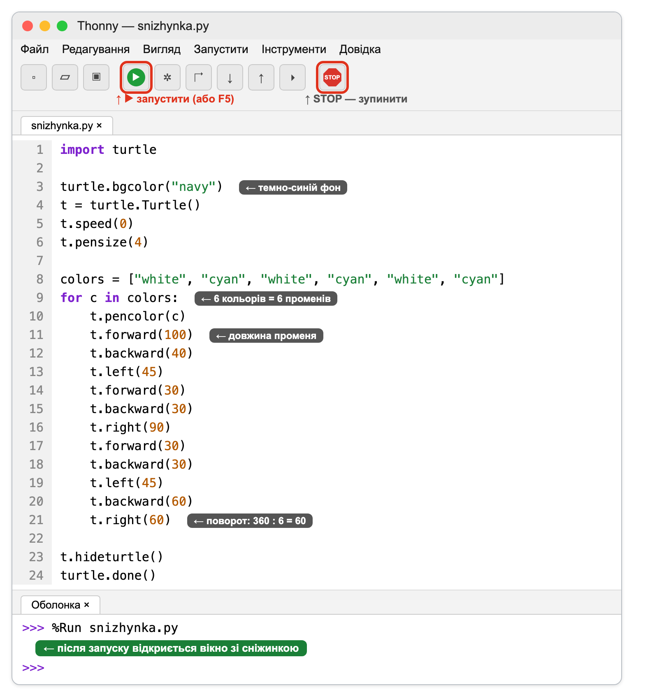

Надворі зима — тож сьогодні Python намалює сніжинку. Ти набереш коротку програму, розберешся, що робить кожен рядок, а потім зміниш кольори, довжину і кількість променів — і вийде твоя власна сніжинка.
"white";for — щоб не писати 6 однакових променів.
for — клавіша Tab або 4 пробіли.snizhynka.py.Якщо внизу, в Оболонці, з'явився червоний текст — подивись номер рядка в ньому і порівняй цей рядок із програмою. Найчастіше це забуті лапки, дужка, двокрапка після for або англійська назва кольору з помилкою.
import turtle turtle.bgcolor("navy") t = turtle.Turtle() t.speed(0) t.pensize(4) colors = ["white", "cyan", "white", "cyan", "white", "cyan"] for c in colors: t.pencolor(c) t.forward(100) t.backward(40) t.left(45) t.forward(30) t.backward(30) t.right(90) t.forward(30) t.backward(30) t.left(45) t.backward(60) t.right(60) t.hideturtle() turtle.done()
Так має вийти:
| № | Рядок | Що він робить |
|---|---|---|
| 1 | import turtle | підключаємо модуль turtle — «черепашку», яка ходить по екрану і малює. |
| 3 | turtle.bgcolor("navy") | фарбуємо фон вікна в темно-синій (navy) — як зимове нічне небо. |
| 4 | t = turtle.Turtle() | створюємо черепашку і називаємо її коротко t. Далі всі команди пишемо через t. |
| 5 | t.speed(0) | найшвидша швидкість: 0 означає «без затримок». |
| 6 | t.pensize(4) | товщина лінії — 4. |
| 8 | colors = ["white", "cyan", ...] | змінна colors — це список (тип даних list): 6 кольорів через кому. Скільки кольорів у списку — стільки променів у сніжинки. |
| 9 | for c in colors: | цикл по списку: усі рядки під ним (з відступом) повторяться для кожного кольору. Змінна c по черзі стає "white", "cyan", "white"… |
| 10 | t.pencolor(c) | колір лінії — той, що зараз у c. Тому промені білі й блакитні по черзі. |
| 11 | t.forward(100) | іти 100 кроків від центру — малюємо промінь. |
| 12 | t.backward(40) | повернутися назад на 40 — до місця, де ростуть гілочки. |
| 13 | t.left(45) | повернутися ліворуч на 45°. |
| 14 | t.forward(30) | намалювати ліву гілочку довжиною 30… |
| 15 | t.backward(30) | …і повернутися назад на промінь. |
| 16 | t.right(90) | повернутися праворуч на 90°: 45° — щоб знову дивитися вздовж променя, і ще 45° — на праву гілочку. |
| 17 | t.forward(30) | намалювати праву гілочку… |
| 18 | t.backward(30) | …і повернутися назад. |
| 19 | t.left(45) | знову дивимось уздовж променя. |
| 20 | t.backward(60) | повернутися в центр: 40 + 60 = 100 — рівно стільки, скільки пройшли вперед. |
| 21 | t.right(60) | повернутися на 60° до наступного променя. 6 променів × 60° = 360° — повне коло. |
| 23 | t.hideturtle() | ховаємо черепашку, щоб вона не закривала сніжинку. |
| 24 | turtle.done() | вікно зі сніжинкою не закривається, щоб ти встиг її роздивитися. |
Порожні рядки 2, 7, 22 нічого не роблять — вони лише ділять програму на частини: підготовка, промені, кінець.
Після кожної зміни закрий вікно зі сніжинкою і натисни ▶. Назви кольорів — англійською, у лапках: "white", "cyan", "lightblue", "silver", "yellow", "pink", "black", "darkblue", "purple".
"navy" на "black" або "purple"."cyan" на "pink" або "yellow". Слідкуй: кожен колір — у лапках, між ними — кома. Кольорів має лишитися 6.4 на 2 — сніжинка стане тоншою, «ажурною».100 на 150, а в рядку 20 — 60 на 110. Чому 110? Щоб повернутися в центр, назад треба пройти стільки ж, скільки вперед: 40 + 110 = 150.60 на 45, бо 8 × 45 = 360. Підказка: 6 променів — 60, 8 — 45, 12 — 30.Вибери відповідь зі списку і натисни «Перевірити». Кожне питання можна перевірити лише один раз. Підказка: усі відповіді є в поясненні рядків.
Тест: 0 з 12
Подумай, як змінити програму, щоб у сніжинки на кожному промені було не 2, а 4 гілочки. Розкажеш на наступному уроці.